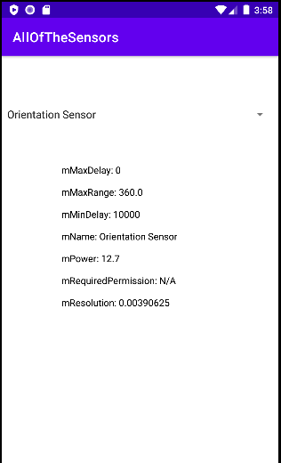
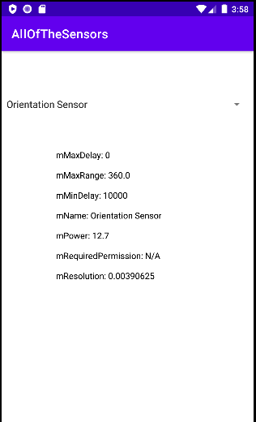

Lab 14: Sensors 1
You are going to see how to use the Sensor and SensorManager classes to see which sensors are available and some of their fields. You will also learn of the classes Field, StringBuilder, Pattern and concept of reflection.
Open Android Studio and create a new project and call it allofthesensors.
Step 1: activity_main.xml
First off in the activity_main.xml design view add:
-
a
Spinnerwidget offset from the top of the screen, remember to constrain the to edges of the screen. -
Set the width as
408dpand height as61dp -
change id to
sensorsSP -
Likewise grab a
TextViewand add it to the the middle of the screen, again anchoring it in place. -
Set the width as
234dpand height as284dp -
change id to
sensorInfoTV
Step 2: strings.xml
-
Open the
strings.xmland add the following string resources:Attribute Text app_name AllOfTheSensors total_sensors Total # Sensors: spinnerPrompt Select a sensor -
Remember to refernce the string resources in the
activity_main.xmlwidgets you have added.
Step 3: MainActivity.kt
-
Open the
MainActivity.ktand add to the top of the class:... class MainActivity : AppCompatActivity() { private var mgr: SensorManager? = null // Declare a SensorManager object ... } -
Next we need initialise the various UI elements. You should know how to do this by now:
Solution
... override fun onCreate(savedInstanceState: Bundle?) { super.onCreate(savedInstanceState) setContentView(R.layout.activity_main) // Set the content view to the activity_main layout // Initialise various UI elements val sensorInfoTV: TextView = findViewById(R.id.sensorInfoTV) val sensorsSP: Spinner = findViewById(R.id.sensorsSP) val sensorCountTV: TextView = findViewById(R.id.sensorCountTV) ... } -
Now we need to declare and initialise the a list for the
spinnerwidget. Then initialise themgrourSensorManagerobject and populate the list with all the sensor names.override fun onCreate(savedInstanceState: Bundle?) { ... val sensorList = ArrayList<String>() // Initialise a list to store sensor names mgr = getSystemService(SENSOR_SERVICE) as SensorManager // Initialise the SensorManager we declared earlier // get the all available sensors and populate the sensorList their names for (s in mgr!!.getSensorList(Sensor.TYPE_ALL)) { sensorList.add(s.name) } ... } -
We could count the number of sensors using
mgr!!.getSensorList(Sensor.TYPE_ALL), but there is no need to invoke all of that again, instead will can just get thesizeof thesensorList. After theforloop append thesensorCountTVwith the number of sensors:... for (s in mgr...) { ... } // Append the count of available sensors to the sensorCountTV TextView sensorCountTV.append(sensorList.size.toString()) -
Now we need to create an object of the
ArrayAdapterso we can fill thespinnerwidget withsensorList. After the sensorCountTV do the following:... sensorCountTV.append(...) // Create an ArrayAdapter to display the sensor names in a Spinner val arrayAdapter = ArrayAdapter(this, android.R.layout.simple_spinner_item, sensorList) arrayAdapter.setDropDownViewResource(com.google.android.material.R.layout.support_simple_spinner_dropdown_item) sensorsSP.adapter = arrayAdapter ... }
Step 4: Getting the Sensor Attributes and Characteristics
-
After setting the
sensorsSP.adapter ...we need to write the code so that when the spinner item is selected we can retrieve the attributes and characteristics of the selected sensor:sensorsSP.onItemSelectedListener = object : AdapterView.OnItemSelectedListener { override fun onItemSelected(adapterView: AdapterView<*>?, view: View, i: Int, l: Long) { } }The above code should look very familiar as we have done the a
spinner.onItemSelectedListener -
Now we have our
onItemSelectedListenerwe need to get the selected item... AdapterView<*>?, view: View, i: Int, l: Long) { for (s in mgr!!.getSensorList(Sensor.TYPE_ALL)) { // get selected sensor val selectedSensor: String = sensorsSP.getSelectedItem().toString() } } -
By using an
ifstatement we can compare theselectedSensoragainst the current sensor (s) in the sensor manager (mgr). If thes.namematches theselectedSensorthen we can initialise aStringBuilderobject.... val selectedSensor: String = sensorsSP.getSelectedItem().toString() // Check if the selected sensor's name matches the current sensor's name if (s.name === selectedSensor) { val stringBuilder = StringBuilder() }Note
In Kotlin there are two types of equality:
- Structural equality (
==- a check for equals() ) - Referential equality (
===- two references point to the same object Sos.nameis an object andselectedSensoras a string is technically an object when compated this way.
- Structural equality (
-
Now we are going to implement reflection in order to call all the functions that are not private and take no arguments. The aim here is to find out as much as we can about each sensor object through open,non nullable methods with a paramenter size of 0.
// Iterate through the methods of the sensor's class for (method in s.javaClass.methods) { try { // Use reflection to find and call methods with certain criteria val methodFound: KFunction<*>? = s::class.members.find { it.name === method.name } as? KFunction<*> if (methodFound != null && methodFound.isOpen && methodFound.parameters.size <= 1) { // Append method name and result to the StringBuilder stringBuilder.append(method.name) .append(": ", methodFound.call(s)).append("\n") } } catch (e: ReflectiveOperationException) { // Handle exceptions if the method is not found var error: String = e.message.toString() Toast.makeText(this@MainActivity,"${e.message}",Toast.LENGTH_LONG) stringBuilder.append(": Error\n") } }There is a lot to break down here and while the comments provide a top level explanation:
KFunction<*>is a useful class that enables the program...val methodFound: KFunction<*>? = s::class.members.find { it.name === method.name } as? KFunction<*>- we can see that the
lambdaexpression is useditto.. and that this is compared using object comparison syntax===. - The
ifconditionif (methodFound != null && methodFound.isOpen && methodFound.parameters.size <= 1)
You should be good to run the program now, create virtual device and test the app.
 

Once, tried with one type of virtual device, try using a different one, see if you get different sensors.
3. Full code below.
MainActivity
package com.example.mobileapps_allofthesensors
import android.hardware.Sensor
import android.hardware.SensorManager
import android.os.Bundle
import android.view.View
import android.widget.AdapterView
import android.widget.ArrayAdapter
import android.widget.Spinner
import android.widget.TextView
import android.widget.Toast
import androidx.appcompat.app.AppCompatActivity
import kotlin.reflect.KFunction
class MainActivity : AppCompatActivity() {
private var mgr: SensorManager? = null // Declare a SensorManager object
override fun onCreate(savedInstanceState: Bundle?) {
super.onCreate(savedInstanceState)
setContentView(R.layout.activity_main) // Set the content view to the activity_main layout
// Initialise various UI elements
val sensorInfoTV: TextView = findViewById(R.id.sensorInfoTV)
val sensorsSP: Spinner = findViewById(R.id.sensorsSP)
val sensorCountTV: TextView = findViewById(R.id.sensorCountTV)
val sensorList = ArrayList<String>() // Create a list to store sensor names
mgr = getSystemService(SENSOR_SERVICE) as SensorManager // Initialise the SensorManager
// Retrieve the list of available sensors and populate the sensorList
for (s in mgr!!.getSensorList(Sensor.TYPE_ALL)) {
sensorList.add(s.name)
}
// Append the count of available sensors to the sensorCountTV TextView
sensorCountTV.append(sensorList.size.toString())
// Create an ArrayAdapter to display the sensor names in a Spinner
val arrayAdapter = ArrayAdapter(this, android.R.layout.simple_spinner_item, sensorList)
arrayAdapter.setDropDownViewResource(com.google.android.material.R.layout.support_simple_spinner_dropdown_item)
sensorsSP.adapter = arrayAdapter
// Set an item selected listener for the Spinner
sensorsSP.onItemSelectedListener = object : AdapterView.OnItemSelectedListener {
override fun onItemSelected(adapterView: AdapterView<*>?, view: View, i: Int, l: Long) {
for (s in mgr!!.getSensorList(Sensor.TYPE_ALL)) {
val selectedSensor: String = sensorsSP.getSelectedItem().toString()
// Check if the selected sensor's name matches the current sensor's name
if (s.name === selectedSensor) {
val stringBuilder = StringBuilder()
// Iterate through the methods of the sensor's class
for (method in s.javaClass.methods) {
try {
// Use reflection to find and call methods with certain criteria
val methodFound: KFunction<*>? =
s::class.members.find { it.name == method.name } as? KFunction<*>
if (methodFound != null && methodFound.isOpen && methodFound.parameters.size <= 1) {
// Append method name and result to the StringBuilder
stringBuilder.append(method.name)
.append(": ", methodFound.call(s)).append("\n")
}
} catch (e: ReflectiveOperationException) {
// Handle exceptions if the method is not found
var error: String = e.message.toString()
Toast.makeText(this@MainActivity,"${e.message}",Toast.LENGTH_LONG)
stringBuilder.append(": Error\n")
}
}
// Display sensor information in the sensorInfoTV TextView
sensorInfoTV.text = stringBuilder
break
}
}
}
override fun onNothingSelected(adapterView: AdapterView<*>?) {
// This function is empty as no action is needed when nothing is selected.
sensorInfoTV.text = ""
}
}
}
}
main_activity xml
<?xml version="1.0" encoding="utf-8"?>
<androidx.constraintlayout.widget.ConstraintLayout xmlns:android="http://schemas.android.com/apk/res/android"
xmlns:app="http://schemas.android.com/apk/res-auto"
xmlns:tools="http://schemas.android.com/tools"
android:layout_width="match_parent"
android:layout_height="match_parent"
tools:context=".MainActivity">
<Spinner
android:id="@+id/sensorsSP"
android:layout_width="408dp"
android:layout_height="61dp"
android:spinnerMode="dialog"
app:layout_constraintBottom_toBottomOf="parent"
app:layout_constraintEnd_toEndOf="parent"
app:layout_constraintHorizontal_bias="0.0"
app:layout_constraintStart_toStartOf="parent"
app:layout_constraintTop_toTopOf="parent"
app:layout_constraintVertical_bias="0.104" />
<TextView
android:id="@+id/sensorInfoTV"
android:layout_width="234dp"
android:layout_height="284dp"
android:text="TextView"
android:textColor="@color/black"
app:layout_constraintBottom_toBottomOf="parent"
app:layout_constraintEnd_toEndOf="parent"
app:layout_constraintStart_toStartOf="parent"
app:layout_constraintTop_toTopOf="parent" />
</androidx.constraintlayout.widget.ConstraintLayout>